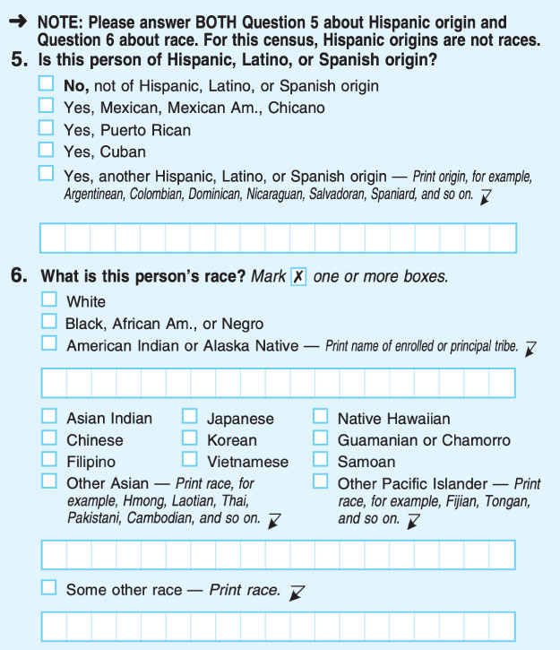

2 Operationalization
2.1 Introduction
One of the most cited articles in political science is by James Fearon and David Laitin (2003) and concerns the causes of civil war. The authors argue that a country’s vulnerability to insurgency1 explains the likelihood that a country ends up in civil war.
Let’s put ourselves in the shoes of the authors. If we want to observe the correlation between civil wars and “vulnerability to insurgency,” we need a quantifiable measure that we can use in our analysis. How do we find such a measure? Fearon and Laitin actually propose more than a dozen measures of “vulnerability to insurgency,” but for now, let’s focus on just one: the presence of rough terrain, which is important because rebels must be able to hide in order to avoid being destroyed by government forces.
Rough terrain is a more managable idea than vulnerability to insurgency, though the researcher must still make important choices. How “rough” must the ground be to qualify as rough terrain? Will we measure roughness in degrees (e.g., on a scale from 1-100) or as categories (flat, somewhat rough, or very rough)? What is the unit of geography for which we will measure roughness? If a town lies in a flat valley surrounded by rocky, steep hills, is that considered rough terrain?
Fearon and Laitin ultimately choose to measure rough terrain as the proportion of the country that is mountainous, as determined by the geographer A.J. Gerard. Still, there are questions about Gerard’s measure. When does a hill become a mountain (the subject of a 1995 film starring Hugh Grant, The Englishman Who Went Up a Hill But Came Down a Mountain)? Does it matter if the mountain is accessible, with roads and trails, or covered in rocks and dense forest? Are mountain ranges better or worse for insurgency compared to mountains that stand alone?
This chapter is all about the challenges of identifying good measures for the concepts that we want to study. Since we cannot measure an abstract concept like vulnerability to rebellions directly, we need to make choices about how to generate usable information that will allow us to conduct our data analysis. In the social sciences, we call these decisions operationalization.
The process of defining a measurable version of a concept.
The bulk of this chapter will cover some guidelines that we can use when coming up with measures to help you avoid common pitfalls in data analysis:
- Measures should be unambiguous.
- Measures should be parsimonious.
- Measures should be accurate.
- Measures should be reliable.
- Measures should be feasible.
We will explore each of these recommendations in turn. However, it is important to note that perfect operationalizations are impossible to obtain. Researchers are often just doing the best they can with the resources that they have. As long as we are transparent with our readers about our choices, we can generally accept the limitations of our measures and move on. Indeed, this is exactly what Fearon and Laitin do in their famous article:
“[Mountainous terrain] does not pick up other sorts of rough terrain that can be favorable to guerrillas such as swamps and jungle, and it takes no account of population distributions or food availability in relation to mountains; but it is the best we have been able to do.”
If their acknowledgement is good enough for more than 12,000 citations,2 then it is good enough for us! Now, let’s turn our attention to some of the best practices we should adopt when operationalizing our variables.
2.2 From Concept to Measurement
Identifying a good operationalization for a concept is somewhat subjective. Every possible operationalization has both pros and cons, and it is important to consider alternative measures before committing to any one approach. I’ve identified some guidelines you can use for good operationalizations, but we will also focus on the trade-offs that exist when trying to satisfy all five criteria. How can we develop an operationalization that is specific, but also simple? When can we be confident enough in the quality of the data we generate, given the practical challenges that we face in collecting that data? Operationalization is as much art as science, and we often know a good measure when we see it. The goal of this chapter is to give you some tools to begin developing your own measures and evaluating the choices of others, and the more that you practice, the more confident you will become in creating good operationalizations.
2.2.1 Unambiguous
The first guideline for good operationalization is that our measures should be unambiguous. Ambiguous measures can cause us to imprecisely collect our data or make it difficult for others to understand the meaning of our data. Especially when we are measuring concepts which can take on different meanings across contexts, ensuring that our operationalization is unambiguous will avoid many of the pitfalls in research and communication that we will discuss later in this book.
Let’s take an example from my own work. As a graduate student, I was interested in how Americans respond to common themes and images around international trade, such as a weathered steelworker losing his job or a small business owner forced to close her store due to cheaper competition. In one part of my work, I explored how often politicians use these themes in their campaign advertisements to signal their opposition to international trade to voters. For example, some candidates evoke anti-elite and anti-corporate themes in their ads, since corporate greed is sometimes blamed for the offshoring of jobs to regions with cheaper labor.
Below I’ve included two of the ads from my study, only one of which was coded as having the the “anti-elite/Wall Street/big business” theme. Can you guess which one it is?
The correct answer is Monica Vernon, “People”! Vernon starts the ad with anti-elite sentiment, stating “There’s these people in Washington… who really don’t care much about us here at home.” She also explicitly refers to the idea that the the working class are unfairly treated.
On the other hand, Deacon’s ad blames international trade specifically, rather than big business or elites, for job losses.
It wouldn’t surprise me if you struggled to identify which ad qualifies under the “anti-elite/Wall Street/big business” theme, since the theme by itself is fairly ambiguous. How directly must the ad reference any of these groups? What if anti-elite sentiment is merely implied?
To address this ambiguity, I developed the following operationalization of the “anti-elite/Wall Street/big business” code:
References to “the belief that [the working class] are on the losing end of an unfair game. Assessments of the rich as having more than they need or deserve, coupled with a concern that many suffer without what they need to survive” (McDermott, Knowles, and Richeson 2019, 358), Knowles, and Richeson 2019](https://doi.org/10.1111/asap.12188), 358). Must be in direct reference to trade/outsourcing (e.g. a separate reference to tax rates for the rich would not count).
How do we know if our measure is specific enough to avoid ambiguity? Often, an unambiguous measure will also generate reliable data, one of the other features of good operationalization (see Section 2.2.4). You can ask family or friends to try generating data using your operationalization on a sample of observations. If the inter-coder (or inter-rater) reliability is high, then you can be confident that your definition is sufficiently unambiguous. However, like many of the principles we will discuss in this book, finding a good definition may be more art than science, and involves trade-offs with other considerations in designing good operationalizations. Use your knowledge of the subject matter to design the least ambiguous definition that still meets, as much as possible, the other goals for operationalization described below.
2.2.2 Parsimonious
Parsimonious is the social scientific term for “simple” (how non-parsimonious of me to use the more complex word!) When deciding between two possible operationalizations, we should select the one that is simpler, all else equal. In practice, however, a more parsimonious definition is often deficient in specificity. This requires us to take the parsimony-specificity trade-off into account.
In general, the more parsimonious a measure is, the less specific the measure is (and vice-versa).
There is no ideal place on the parsimonious-specific spectrum where an operationalization should fall. Navigating this trade-off depends a lot on the researcher and their goals. Sometimes, we might prefer a measure that is more parsimonious than specific because we want our operationalization to apply to other cases as well, and measures that are too specific tend to generalize poorly. Other times, we might prefer a specific measure to a parsimonious one because we want to be highly attuned to a specific context or case.
For this reason, it is important not to settle on our first idea for an operationalization. We should consider at least a couple of alternative operationalizations, their pros and cons, and then select the measure that best fits our goals for our research. For example, let’s say that you want to measure individuals’ driving ability to see whether insurance rates fairly reflect insurers’ risk. At first, you might operationalize driving ability as how many tickets a driver received in the past year. This is a fairly parsimonious measure, but it also lacks specificity. How many of the tickets were for dangerous driving? Were the tickets minor or serious? Should parking tickets count as well?
So you try a more specific operationalization based on people’s actual driving habits, such as how quickly they accelerate or brake, how sharply they turn, and whether they follow the speed limit. Some insurance companies will monitor these metrics and potentially offer discounts to safer drivers. These operationalizations are highly specific, but not particularly parsimonious. How many different driving characteristics will you need to measure to generate a proper indicator of driving ability? Will you need to differentiate between driving habits on city roads versus interstate highways?
Like Goldilocks, you try one more operationalization: how many miles an individual drives each year. This is a fairly parsimonious measure, but it is also pretty specific. The more someone drives, the more likely they are to be in an accident and make a claim against their insurance. It is generalizable across different geographies, types of vehicles, and driving styles, but also speaks directly to the risk of insurers paying out claims. It is squarely in the middle of the parsimony-specificity tradeoff, and most insurers include expected driving miles when underwriting car insurance policies.
In this case, parsimony suits the needs of insurers pretty well, but our analysis may not always be best served by a simple measure. We typically aim for parsimony because it makes our research easier to conduct, easier to understand, and easier to explain, not because simplicity is necessarily better than complexity. As Andrew Gelman, a highly influential statistical social scientist, puts it, “In practice, I often use simple models because they are less effort to fit and, especially, to understand. But I don’t kid myself that they’re better than more complicated efforts!”
2.2.3 Accurate
Throughout this book, we will talk about many sources of error, and each type of error will be increasingly challenging to address. Fortunately, at the operationalization stage, the researcher still has nearly complete control over the data generating process. Therefore, we should try to eliminate measurement error from our data.
Measurement error occurs when the processes, procedures, or instruments used to collect data do not accurately generate the desired information.
Obtaining accurate information is particularly challenging when working with social science data, because we rarely have an external standard against which to compare our measurements. If we are designing a new thermometer, we can validate that our instrument is accurate by comparing its data to the temperature recorded by one or more other thermometers. However, as journalists and political professionals, we are often operationalizing concepts like beliefs, attitudes, and opinions for which the true value is not known.
Even though there is no source of truth against which we can evalute our measures of subjective attitudes, we can still use our knowledge about the subject matter to design more accurate instruments. For example, since 1970, the U.S. Census Bureau has asked separate questions about race and Hispanic or Latino ethnicity. However, survey researchers found that some people of Hispanic or Latino descent respond to the race question by selecting “Some other race,” leading to debate about whether Hispanic or Latino identity should be treated as a race. Today, U.S. government agencies are instructed to include Hispanic or Latino as a choice for race alongside other longstanding options. Moreover, until the 2000 Census, individuals could only select one race category to describe themselves, which ignored the possibility of multi-racial Americans. Respondents may now select as many race options as apply. As legal scholar Naomi Mezey said in a New York Times review of the history of race on the U.S. Census, “It’s like the Census is adjusting the dials on your camera and you get different pictures accordingly.” Finding the right settings on our data camera is critically important for generating accurate operationalization.

We rely on our research subjects to provide us with accurate information about these highly subjective concepts, and most of the time, the data are close enough to the truth accept their validity. We accept that there will be some measurement error, but that the magnitude is sufficiently small as to be ignorable in most analyses. When is measurement error ignorable? Let’s take the example of the “shy Trump voter” theory. During the 2016 presidential election, there was lots of media discourse about the possibility that survey respondents who planned to vote for Donald Trump would not admit this to an interviewer due to social desirability bias.3 However, studies of the “shy Trump voter” theory show that the effect of social desirability bias on expressed vote intention is very small.
In one straightforward test, the pollster Morning Consult compared support for Hillary Clinton and Donald Trump among those who responded to a survey online and those who spoke to a live interviewer on the phone. They find no meaningful difference in support for the candidates between these two survey modes, even though the “shy Trump voter” theory would predict a greater impact from social desirability bias when speaking to a live interviewer. As a result of studies like this, pollsters have concluded that the risk of respondents not honestly expressing their support for Donald Trump in polls is small enough as to be ignorable.
{kind=link}
I also want to point out that the definition of measurement error is about the information produced using our data generating process, not the outcomes of our analysis. We can have an unambiguous, parsimonious, and accurate operationalization and yet still fail to find the patterns or relationships in the data that we expect. When we follow the scientific method, this will happen sometimes. Maybe our intuitions were wrong, or our data collection mechanism was flawed (the focus of the next chapter), or we just got unlucky. Good operationalization is a necessary, but not sufficient condition for a valid data analysis that allows us to uncover new facts about the world.
2.2.4 Reliable
Reliability refers to the likelihood that, given the same conditions, our measure will record the same data in repeated trials. Getting the same result over and over again is distinct from accuracy, which has to do with whether the data we generate is close to the true value. Think about a broken clock stuck at 5:15 – the clock’s measurement of time is extremely reliable (it is always 5:15!) but only accurate twice per day.
Of course, our goal is to have measures that are both reliable and accurate, and in certain cases, reliability may be an imperative. When designing a diagnostic evaluation for a disease, we want each test to reliably generate a positive value if the disease is present and a negative value if the disease is not present. But as data analysts, we are often willing to sacrifice some reliability if the mean, or average, of our data samples is accurate, because we are not focusing on the results of individual tests. Instead, we are interested in the value across our entire sample or population.4, 5 This is especially the case when working with attitudes, beliefs, and opinions where generating exactly the same conditions for data collection are nearly impossible. If I conduct a diagnostic medical test five minutes apart, it is very unlikely that the biology of the disease has changed during that time; on the other hand, if I ask your opinion about a hot-button political issue, even small changes in your thinking or mood could change your response between the two tests.
As an example, consider the Implicit Association Test (IAT), which measures the strength of subconscious associations between two groups (such as European Americans and African Americans) with subjective evaluations (such as good and bad). Participants are presented with images and words and asked to sort them into groups as quickly as they can. Based on how long it takes the participant to sort images and words representing the groups – such as images of people’s faces – relative to a set of words (e.g., “grief” and “appealing”), we can identify implicit psychological associations between the groups and the evaluations. If you’d like, you can learn more about the IAT and take an IAT yourself at Project Implicit’s website.
The IAT has been used to evaluate the effect of implicit bias on voter behavior, candidate choice, race and immigration attitudes, partisan identity, and more. Despite its prominence, meta-analyses of research using the IAT find that the test has only a moderate reliability, which cautions us against drawing conclusions about a single individual’s attitudes from just one test result. Implicit attitudes are a complex cognitive process, and the way that individuals respond to IAT tasks from moment to moment can vary dramatically. Yet, the IAT is widely considered reliable enough to use it in studies correlating implicit attitudes with other measures or comparing average results between two different groups.
The goal of reliability is not to create an operationalization that perfectly generates consistent data, but rather to maximize our confidence that we are getting signals from our data and not just noise. Statistical estimates like Cronbach’s alpha, Cohen’s kappa, and Intraclass Correlation Coefficient can help us diagnose potentially unreliable measures, but more often we rely on our knowledge of the subject matter and the data generating process to assess the reliability of our operationalizations.
2.2.5 Feasible
One of my favorite professors in college would ask his students to design research projects “as if money, time, and resources were no object.” The idea is that freeing ourselves from logistical concerns allows the most important and critical ideas in our research design to surface, and then we can whittle down our ideal study into one that is practical and reasonable. I’ve found this framework helpful again and again in my career, and that is why we discuss feasibility as the last quality of a good operationalization. We should focus on finding the best operarationalization that is unambiguous, parsimonious, accurate, and reliable, and only then turn to considerations of feasibility.
It’s fairly intuitive that we need to actually be able to generate the data that we would like to collect, but sometimes our ideal operationalization is not available to us. For example, I may believe that having my students write essays about the course material is the best way to evaluate their knowledge. However, if I am teaching a class of 350 students, I would not assign my students an essay because I cannot effectively grade that many responses. My operationalization of student knowledge is not a feasible one, and I will need to come up with an alternative measure, such as a multiple choice test or short answer questions. Nevertheless, knowing I would ideally assign my students an essay will help me design more feasible assessments that still measure the concepts in which I am interested, such as students’ ability to find relationships between multiple topics or apply tools to novel cases.
When our preferred operationalization is not feasible, it may be possible to identify a proxy measure, a similar or related operationalization that captures enough of the same information as our ideal measure that we can use our alternative measure as a substitute. We often use proxy measures when collecting data about attitudes or beliefs that individuals are unwilling or unable to reliably report themselves. A proxy measure is a good option if the operationalization is highly correlated with the ideal measure (such as assessing whether someone enjoys movies by asking if they watch the Oscars), or if the researcher can combine a group of measures into a single numeric variable known as an index (or scale) variable:
An index (or scale) variable is a type of proxy measure in which the researcher combines multiple sources of data into a single representation of the concept under investigation using a pre-defined mathematical operation.
The fact that the index variable is generated though a pre-defined mathematical operation is important to avoid cherry-picking data to suit a particular statistical conclusion. The most common approach to designing index variables is to simply add up the individual elements of the index. Imagine that we want to measure a person’s level of engagement with politics. We could ask individuals to self-report this information, but we would run into a couple of potential issues. First, survey respondents are likely to over-report their political engagement due to social desirability bias, so our measure will be inaccurate. Second, “political engagement” can mean different things to different people, which means that our measure will be unreliable. Instead, we could develop an index variable that adds up the number of political activities in which a person participates, such as:
- Voted in the most recent election
- Donated to a political candidate in the most recent election
- Volunteered for a political campaign in the most recent election
- Attended a political campaign event (e.g., rally, speech) in the most recent election
- Called or wrote to an elected representative in the past year
- Signed a petition in the past year
- Attended a protest in the past year
- Attended a government meeting (e.g., city council or school board) in the past year
- Wrote a letter to the editor of a newspaper in the past year
Respondents who respond “yes” to all of these activities would receive an index score of 9, while respondents who participated in none of these activities would have an index score of 0. Our hope is that because the questions are specific and relate to behaviors rather than beliefs, the results will be more accurate and reliable than if we had asked a single political engagement question directly.6
It is common to see indicies used to measure major social, economic, and political processes that do not lend themselves easily to a single operationalization. For example, The Conference Board has produced a Consumer Confidence Index since 1967 that measures Americans’ optimism about the economy based on their views of current economic conditions and their expectations for economic conditions six months from now. Indicies are also commonly used to generate global comparisons across countries, since the measure needs to be comprehensive enough to apply to many different contexts. This includes the United Nations Development Programme’s Gender Inequality Index that combines the maternal mortality rate, adolescent birth rate, female education participation rate, female representation in legislative bodies, and female labor force participation rate. The index ranges from 0 to 1, with higher values indicating greater inequality.
{kind=link}
Whether you use a single measure or an index measure to operationalize your concepts, it is a necessary condition that you actually be able to collect the data. It is extremely disappointing to plan an entire research project, only to find out that the data you need is not available! That does not mean we shouldn’t dream about our ideal operationalizations, but be realistic. All researchers, despite our deepest wishes, are limited by time, money, and/or resources, and it is our job to find the best way to gather our data in the midst of those constraints.
2.3 Summary
- bullet points go here
2.4 Exercise
The Monmouth University Poll, one of the nation’s preeminent national election pollsters, now asks survey respondents about their probability of supporting each candidate as separate questions rather than a single head-to-head question for each race. Patrick Murray, the Director of the Monmouth University Polling Institute, wrote that,
“Horse race polls are not judged on the range of support shown for a candidate – i.e., each candidate’s vote share plus or minus a margin of error – but on assessing the size of the gap between the two candidates’ shares. This obsession with ”the gap” is fraught with potential error… This [change] gives a proxy for the horse race question while also providing another layer of understanding the campaign’s dynamics – specifically, how high or low is each candidate’s potential ceiling of support.”
{kind=link}
Q goes here
Defined as “military conflict characterized by small, lightly armed bands practicing guerrilla warfare from rural base areas.”↩︎
According to Google Scholar as of July 3, 2025.↩︎
Social desirability bias is the tendency of survey respondents to answer questions in ways that will be viewed favorably by others.↩︎
These terms are defined in CH. XX↩︎
There are some exceptions, such as predicting vote behavior.↩︎
Respondents are known to over-report certain behaviors like voting, which could lead to an inaccurate index, but as just one element in a nine-part index, the effect of this inaccuracy will be relatively diluted.↩︎